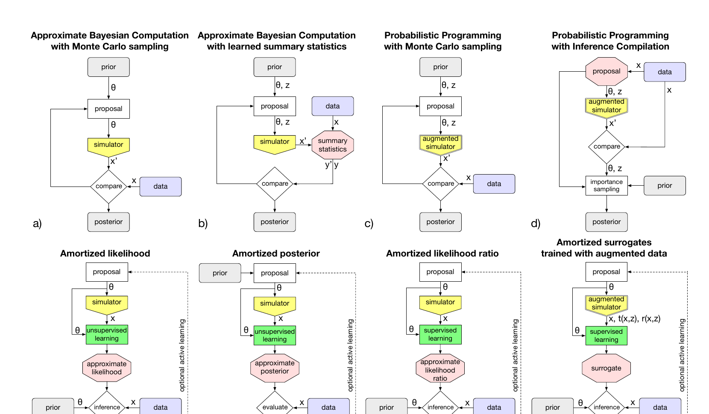

Machine Learning for
Physics & Astronomy 2026
Lecture 1a: ML in astroparticle physics & gravitational waves
An overview, organised around the scientific-method loop
Christoph Weniger — University of Amsterdam (GRAPPA)
Doing physics with data, and where ML now enters
ML now lives at every arrow. We will touch on each, but the lecture — and the rest of the school — spend most time on the bottom line: inference.
A short history of statistical / computational astronomy
- 1809 — Gauss, Theoria Motus: least squares rediscovers Ceres. ML-before-ML.
- 1911–1913 — Hertzsprung & Russell: statistical population study of stellar luminosities & colours.
- 1968 — Schmidt, V/Vmax: inference on a real survey.
- 1996 — Bertin & Arnouts, SExtractor: CLASS_STAR is a feed-forward NN. Deployed on every modern survey.
- 2010 — Ball & Brunner review: Sloan-era ML (RF, SVM, photo-z, classification).
- 2015 — Dieleman, Willett & Dambre: rotation-invariant CNN wins the Galaxy Zoo Kaggle challenge. The deep-learning era begins for astro.
Bertin & Arnouts 1996 (A&AS 117, 393); Ball & Brunner 2010 (arXiv:0906.2173); Dieleman et al. 2015 (arXiv:1503.07077).
ML for theory — can a network rediscover the equation?

- Cranmer, Sanchez-Gonzalez et al. 2020. Train a graph net on N-body sims, distil its edge messages with symbolic regression. Recovers Newton; discovers a new analytic formula for dark-matter overdensity δ (MAE 0.088).
- Lemos et al. 2022. Same trick on 30 years of real solar-system data: rediscovers Newton's law plus all planetary masses, unsupervised.
- Tools: PySR (Cranmer 2023), AI Feynman (Udrescu & Tegmark 2020).
- Cosmology-adjacent: Bartlett, Desmond & Ferreira 2022 — exhaustive SR on H(z); ∼40 of 5.2M functions fit cosmic chronometers better than Friedmann.
- Honest caveat: still thin in APP/GW specifically. The arrow exists; the field is moving in.
Cranmer et al. 2020 (arXiv:2006.11287); Lemos et al. 2022 (arXiv:2202.02306).
ML for the simulator — emulators replace expensive forward models

- CosmoPower (Spurio Mancini, Piras et al. 2021): NN emulators for cosmological power spectra; the de-facto inside modern MCMC pipelines.
- CAMELS (Villaescusa-Navarro et al. 2021): thousands of N-body+hydro sims as training set for emulators and SBI.
CosmoPower (arXiv:2106.03846); CAMELS (arXiv:2010.00619).
ML for the simulator — gravitational-wave surrogates

- NRSur7dq4 (Varma et al. 2019): 1528 NR sims, q ≤ 4, χ ≤ 0.8, generic spins. ≥1 order of magnitude more accurate than alternatives within training range. Used in GW190521.
- mlgw (Schmidt 2020) and mlgw-bns (Tissino 2022): PCA+regression on EOB waveforms; 10–50× speedup. BNS validated on GW170817.
- DANSur (Fernandes et al. 2024): dual-stage NN, pretrained on approximants then fine-tuned with NR. Millions of waveforms in <20 ms on GPU; mean NR mismatch ∼10−4.
- Generative-model variant: Liao & Lin 2021, conditional autoencoder, >97% overlap, 10–100× over EOBNR.
Varma et al. 2019 (arXiv:1905.09300); Fernandes et al. 2024 (arXiv:2412.06946).
ML for the instrument — Deep Loop Shaping at LIGO Livingston

- DeepMind + LIGO Instrument Team, Science 389, 6764 (2025). Reinforcement learning with a frequency-domain reward controls mirror suspensions in real time.
- >30× control-noise reduction in the 10–30 Hz band, up to 100× in sub-bands. Surpasses the quantum-limit-motivated design goal.
- Loud, recent, on a real detector. ML now operates a flagship physics instrument.
Buchli, Tracey et al. 2025 (arXiv:2509.14016; DOI 10.1126/science.adw1291).
ML for the data — glitch classification (Gravity Spy)

- Advanced LIGO data contains instrumental/environmental transients that mask or mimic astrophysical signals.
- Zevin et al. 2017: CNN + Zooniverse citizen-science labels — the canonical glitch classifier.
- Wu et al. 2024 (O4 update): multi-time-window fusion with attention. Deployed in O4.
Zevin et al. 2017 (arXiv:1611.04596); Wu et al. 2024 (arXiv:2401.12913).
ML for the data — neutrino reconstruction at IceCube

- Cascade-CNN with hexagonal kernels (Abbasi et al. 2021, JINST 16). Tested on experimental data. 2–3 orders of magnitude faster than likelihood reconstruction, robust to simulation systematics.
- 2023 DeepCore CNN: 2D architecture exploiting time and depth translational symmetry for muon-neutrino flavour ID and inelasticity. Outperforms conventional likelihood reconstruction.
Abbasi et al. 2021 (arXiv:2101.11589); IceCube DeepCore CNN 2023 (arXiv:2307.16373).
ML for the data — probabilistic galaxy morphology

- Walmsley et al. 2020 (MNRAS): Bayesian CNN + generative model of volunteer responses on Galaxy Zoo.
- Output is not a class label but a posterior over morphology — calibrated uncertainty on real survey data.
- The clean "Bayesian deep learning on real images" example.
Walmsley et al. 2020 (arXiv:1905.07424).
ML for the data — classifying unassociated γ-ray sources

- Zhu et al. 2023. Voting ensemble of ML classifiers on Fermi-LAT unassociated sources.
- High Galactic latitude: 4 binary classifiers, 91% balanced accuracy, 1037 AGN + 88 PSR candidates.
- Low Galactic latitude: 4 ternary classifiers, 81% balanced accuracy, 290 AGN-like + 135 PSR-like + 742 other-like.
Zhu et al. 2023 (arXiv:2311.03678).
ML for the inference — GW detection, then & now


- Gabbard et al. 2018 (PRL): CNN matches matched-filter ROC on the same simulated datasets. The "is this possible?" demonstration. Caveat: simulated noise.
- AresGW (Nousi et al. 2022, 2024): 54-layer ResNet + Deep Adaptive Input Normalization + dynamic augmentation + curriculum learning. Detects non-aligned-spin BBH in real LIGO O3a noise. 2024 paper reports new ML-only candidate events in the 7–50 M⊙ training range.
- Six years from "can it work?" to "it's finding events the pipelines missed."
Gabbard et al. 2018 (arXiv:1712.06041); AresGW (2211.01520 & 2407.07820).
ML for the inference — DINGO for GW parameter estimation

DINGO = neural posterior estimation on GW strain.
- Simulator: waveform model + LIGO/Virgo noise PSDs.
- Embedding: whitened strain → 128-d summary (SVD-seeded ResNet).
- Head: 15-D conditional normalising flow over masses, spins, distance, sky, inclination.
DINGO-IS (2022) adds importance sampling: unbiased posteriors + failure-case diagnostic. 42 BBH events, median ε ∼10%.
Dax et al. 2021 (PRL 127, 241103); Dax et al. 2022 (arXiv:2210.05686).
ML for the inference — beyond gravitational waves
- SBI is now on real instrument data in several non-GW domains: strong lensing, 21cm cosmology, CMB analysis, field-level galaxy clustering.
- The bottleneck is no longer "does the method work?" but "is the simulator faithful enough?"
Two ways to do Bayesian inference with a simulator
- Write down \(p(d\mid\theta)\) explicitly.
- Replace the slow forward model with a neural emulator (CosmoPower).
- Run MCMC / HMC over the emulator. The likelihood is still there.
- No explicit likelihood. Only \((\theta_i, x_i) \sim p(\theta)\,p(x\mid\theta)\) pairs.
- Learn the posterior (NPE), the likelihood (NLE), or the ratio (NRE) directly.
- DINGO is NPE. Most of the rest of this school is here.

Cranmer, Brehmer & Louppe 2020, "The frontier of simulation-based inference," PNAS 117, 30055 (arXiv:1911.01429).
The transverse trend — and where we go next
Foundation models touching astro
- AstroCLIP (Parker et al. 2024): cross-modal image-spectrum embedding; transfers to photo-z, morphology, redshift.
- AstroLLaMA (Nguyen et al. 2023): LLaMA-2 domain-adapted on astro-ph abstracts.
- No Mistral-in-astro paper exists to my knowledge as of mid-2026.
Where Lec 1b picks up
for i in 1..N:
θ_i ∼ p(θ)
x_i ∼ p(x | θ_i)
if d(x_i, x_obs) < ε:
accept θ_iThe whole right column of slide 1 lives or dies on what we can do with this loop. Lec 1b: how it breaks, and what neural SBI fixes.
AstroCLIP (arXiv:2310.03024); AstroLLaMA (arXiv:2309.06126).